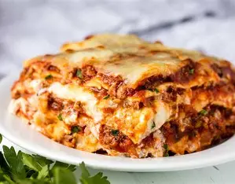

LASAGNA

Description
Lasagna is a classic Italian baked pasta dish made by layering sheets of pasta with rich meat sauce, creamy béchamel, and melted cheese.
It’s hearty, comforting, and perfect for family meals or gatherings, offering a satisfying combination of textures and flavors.
Ingredients
- Lasagna noodles
- 500g ground beef
- 1 onion, chopped
- 2 cloves garlic, minced
- 400g tomato sauce
- 1 cup ricotta cheese
- 1 cup shredded mozzarella cheese
- 1/2 cup grated parmesan cheese
- Salt, pepper, olive oil
- Fresh basil (optional)
Steps
- Preheat oven to 180°C (350°F).
- Cook lasagna noodles according to package instructions.
- Sauté onion and garlic in olive oil, then add ground beef and cook until browned.
- Add tomato sauce, salt, and pepper, and simmer for 15 minutes.
- Layer sauce, noodles, ricotta, and mozzarella in a baking dish.
- Repeat layers and finish with parmesan on top.
- Bake for 30–35 minutes until golden and bubbly.
- Let it rest for 10 minutes before serving.
Home